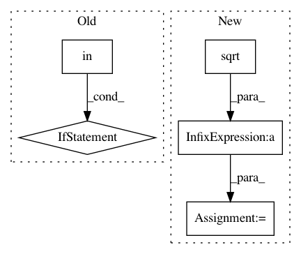

3abe21872cf528c3623d342a5ea8f398e9b5ad5b,lib/matplotlib/contour.py,ContourSet,_process_levels,#ContourSet#,1235
Before Change
if self.extend in ("both", "min"):
self._levels.insert(0, min(self.levels[0], self.zmin) - 1)
if self.extend in ("both", "max"):
self._levels.append(max(self.levels[-1], self.zmax) + 1)
self._levels = np.asarray(self._levels)
if not self.filled:
self.layers = self.levels
After Change
// Layer values are mid-way between levels in screen space.
if self.logscale:
// Avoid overflow by taking sqrt before multiplying.
self.layers = (np.sqrt(self._levels[:-1])
* np.sqrt(self._levels[1:]))
else:
self.layers = 0.5 * (self._levels[:-1] + self._levels[1:])
def _process_colors(self):
In pattern: SUPERPATTERN
Frequency: 4
Non-data size: 5
Instances
Project Name: matplotlib/matplotlib
Commit Name: 3abe21872cf528c3623d342a5ea8f398e9b5ad5b
Time: 2018-07-08
Author: efiring@hawaii.edu
File Name: lib/matplotlib/contour.py
Class Name: ContourSet
Method Name: _process_levels
Project Name: tensorflow/cleverhans
Commit Name: 05425c36bd27b0611f0ea202aaf9d3c3934bda59
Time: 2017-12-23
Author: dongyinpeng@gmail.com
File Name: cleverhans/attacks.py
Class Name: MomentumIterativeMethod
Method Name: generate
Project Name: geomstats/geomstats
Commit Name: acedbe6cc807610d5495615dea662aac427a7ff5
Time: 2018-07-29
Author: ninamio78@gmail.com
File Name: tests/test_special_orthogonal_group.py
Class Name: TestSpecialOrthogonalGroupMethods
Method Name: test_matrix_and_tait_bryan_angles_zyx
Project Name: geomstats/geomstats
Commit Name: acedbe6cc807610d5495615dea662aac427a7ff5
Time: 2018-07-29
Author: ninamio78@gmail.com
File Name: tests/test_special_orthogonal_group.py
Class Name: TestSpecialOrthogonalGroupMethods
Method Name: test_matrix_and_tait_bryan_angles_xyz